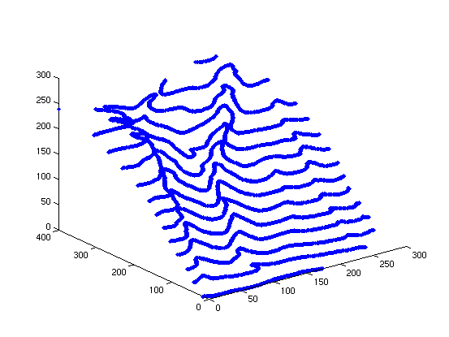
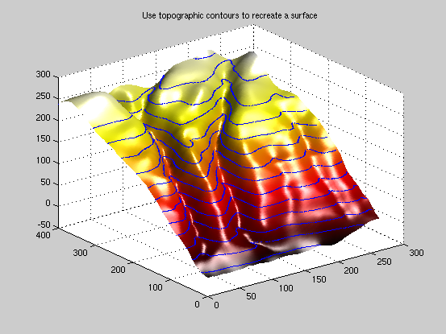
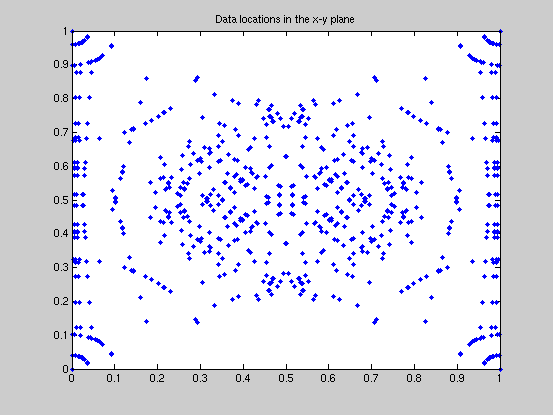
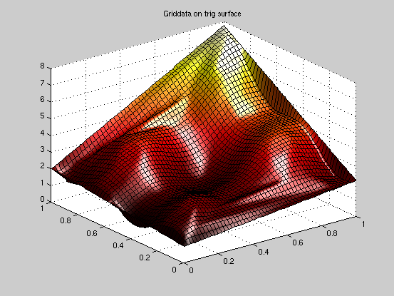
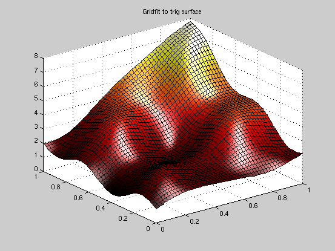
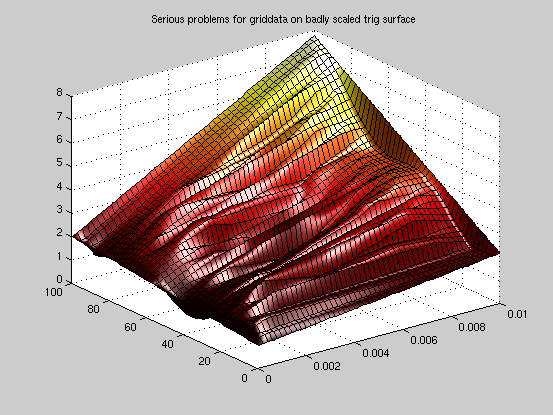
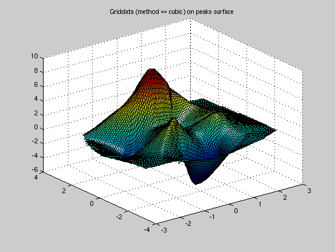
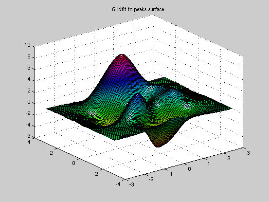
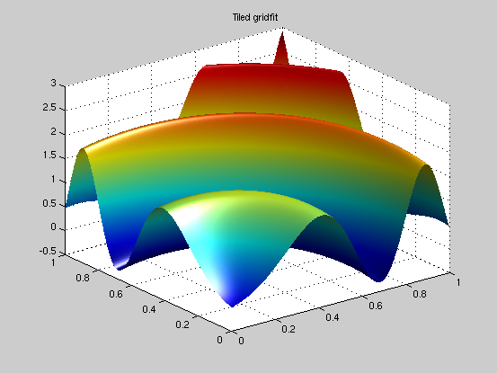

Contents
Topographic data
load bluff_data;
x=bluff_data(:,1);
y=bluff_data(:,2);
z=bluff_data(:,3);
plot3(x,y,z,'.')

gx=0:4:264;
gy=0:4:400;
g=gridfit(x,y,z,gx,gy);
figure
colormap(hot(256));
surf(gx,gy,g);
camlight right;
lighting phong;
shading interp
line(x,y,z,'marker','.','markersize',4,'linestyle','none');
title 'Use topographic contours to recreate a surface'
 Fitting a trigonometric surface
clear
n1 = 15;
n2 = 15;
theta = rand(n1,1)*pi/2;
r = rand(1,n2);
x = cos(theta)*r;
y = sin(theta)*r;
x=x(:);
y=y(:);
x = [[0 0 1 1]';x;x;1-x;1-x];
y = [[0 1 0 1]';y;1-y;y;1-y];
figure
plot(x,y,'.')
title 'Data locations in the x-y plane'
 z = sin(4*x+5*y).*cos(7*(x-y))+exp(x+y);
xi = linspace(0,1,51);
[xg,yg]=meshgrid(xi,xi);
zgd = griddata(x,y,z,xg,yg);
figure
surf(xi,xi,zgd)
colormap(hot(256))
camlight right
lighting phong
title 'Griddata on trig surface'
 zgrid = gridfit(x,y,z,xi,xi);
figure
surf(xi,xi,zgrid)
colormap(hot(256))
camlight right
lighting phong
title('Gridfit to trig surface')
 The trig surface with highly different scalings on the x and y axes
xs = x/100;
xis = xi/100;
ys = y*100;
yis = xi*100;
[xg,yg]=meshgrid(xis,yis);
zgd = griddata(xs,ys,z,xg,yg);
figure
surf(xg,yg,zgd)
colormap(hot(256))
camlight right
lighting phong
title 'Serious problems for griddata on badly scaled trig surface'
zgrids = gridfit(xs,ys,z,xis,yis,'autoscale','on');
figure
surf(xis,yis,zgrids)
colormap(hot(256))
camlight right
lighting phong
title 'Gridfit (automatically scaled) on trig surface'
Warning: Duplicate x-y data points detected: using average of the z values.
 Fitting the "peaks" surface
clear
n = 100;
x = (rand(n,1)-.5)*6;
y = (rand(n,1)-.5)*6;
z = peaks(x,y);
xi = linspace(-3,3,101);
zpgf = gridfit(x,y,z,xi,xi);
[xg,yg]=meshgrid(xi,xi);
zpgd = griddata(x,y,z,xg,yg,'cubic');
figure
surf(xi,xi,zpgd)
colormap(jet(256))
camlight right
lighting phong
title 'Griddata (method == cubic) on peaks surface'
figure
surf(xi,xi,zpgf)
colormap(hsv(256))
camlight right
lighting phong
title('Gridfit to peaks surface')
  Using tiles in gridfit
n = 100000;
x = rand(n,1);
y = rand(n,1);
z = x+y+sin((x.^2+y.^2)*10);
xnodes = 0:.00125:1;
ynodes = xnodes;
[zg,xg,yg] = gridfit(x,y,z,xnodes,ynodes,'tilesize',120,'overlap',0.25);
surf(xg,yg,zg)
shading interp
colormap(jet(256))
camlight right
lighting phong
title 'Tiled gridfit'
